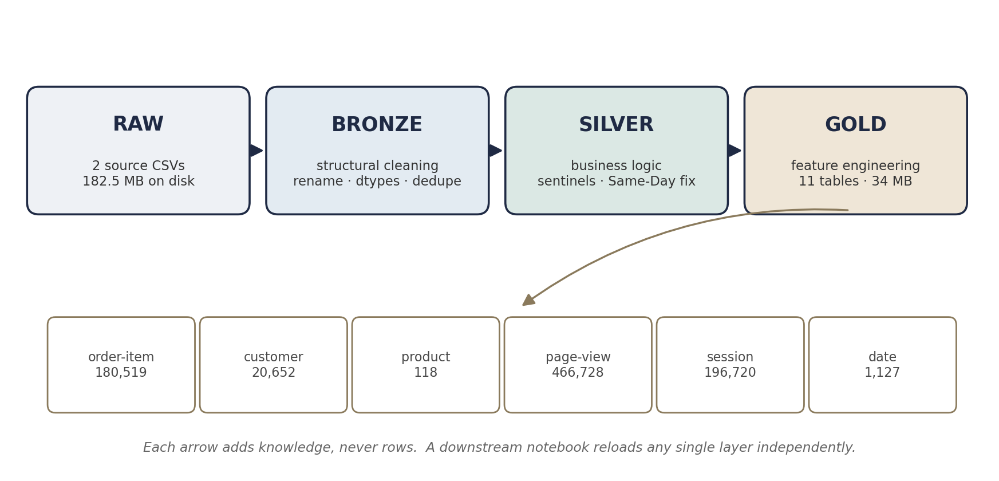
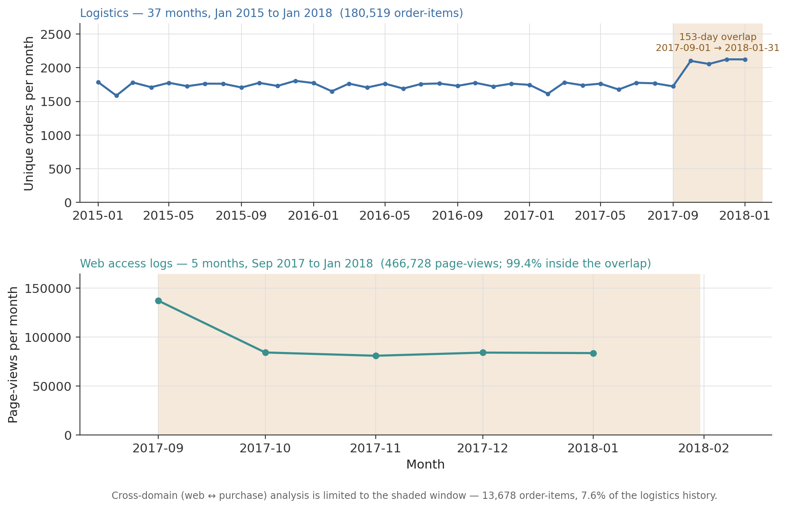
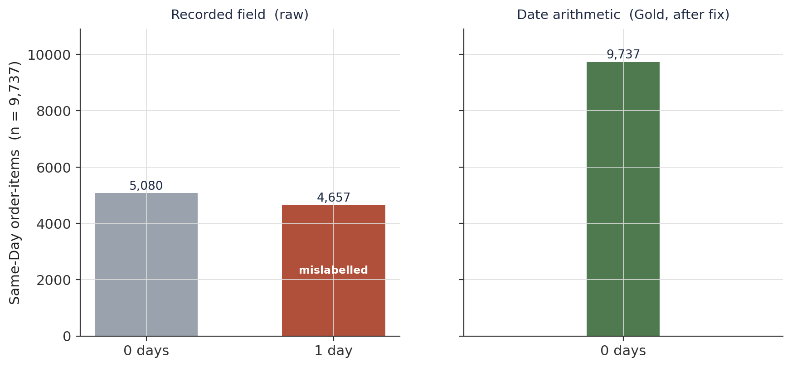
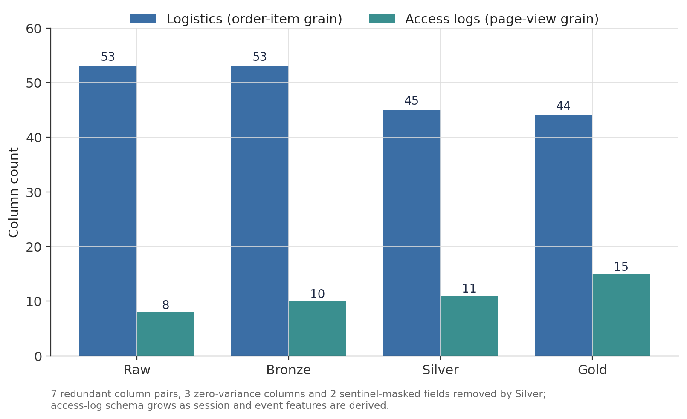
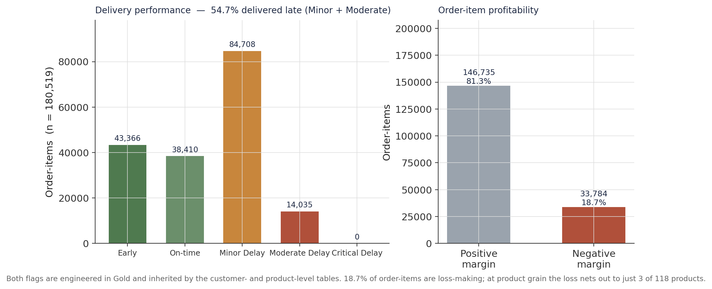
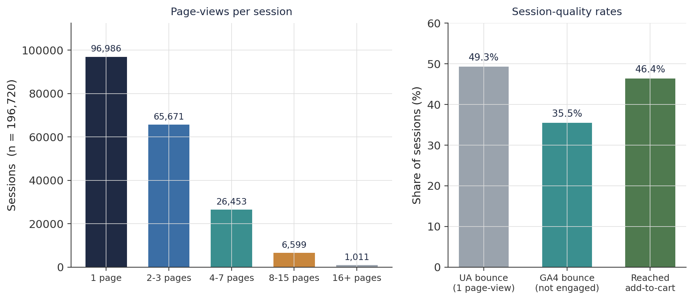
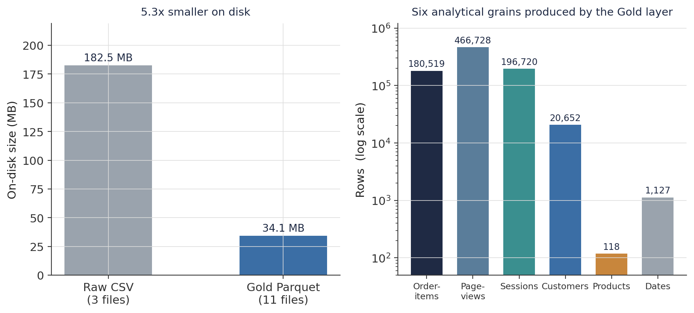

An Idempotent Medallion Pipeline for a Dual-Domain Supply-Chain Dataset, With Adaptive Anomaly Reconciliation
Turning a 180,519-row logistics CSV and a 466,728-event web access log into eleven validated Gold feature tables — a Bronze → Silver → Gold contract, a data-driven Same-Day shipping fix, and a 153-day cross-domain window.
A three-layer medallion ETL pipeline that feeds every downstream DataCo analysis. Dual-domain ingestion: 180,519 order-item transactions (three years) joined conceptually to 466,728 web page-views (five months). Adaptive anomaly reconciliation: 4,657 Same-Day shipments carry a recorded transit time of 1 day that date arithmetic proves is 0 — the field is overridden from the timestamps. Redundancy audit: 7 identical column pairs and 3 zero-variance columns (two of them sentinel-masked with XXXXXXXXX) removed at Silver. Sessionisation: a 30-minute inactivity rule turns the page-view stream into 196,720 sessions. Output: 11 Gold Parquet tables at six analytical grains, validated for round-trip integrity, shape, and determinism.
medallion architecture, ETL pipeline, bronze silver gold, data quality audit, sentinel encoding, redundant columns, sessionisation, GA4 engagement, feature engineering, Parquet, idempotent pipeline, data validation, supply chain analytics, Python, pandas
Overview
This is the extract–transform–load (ETL) stage of an eight-notebook analysis of the DataCo Smart Supply Chain dataset. It has one job: turn two raw source files into a set of validated, feature-engineered analytical tables that the operations, customer, product, clickstream, segmentation, and risk-scoring notebooks can each load without re-running any upstream logic. The pipeline does that through a three-layer medallion architecture (Bronze → Silver → Gold), where each layer has a strict contract, a distinct fault-isolation boundary, and a persisted Parquet snapshot any consumer can reload independently.
Two properties of the raw data shape the whole design:
- The two domains do not share a time axis. The logistics file covers 37 months (January 2015 – January 2018); the web access log covers 5 months (September 2017 – January 2018). Any analysis that links browsing to purchasing is only defensible inside the 153-day intersection — a constraint the pipeline enforces by materialising
_overlapsubsets rather than leaving it to each analyst to remember. - Data-quality defects are heterogeneous and mostly invisible to a null count. Seven pairs of columns are byte-for-byte identical; three columns hold a single value across all 180,519 rows; two more are filled entirely with the mask string
XXXXXXXXX; and 4,657 Same-Day shipments carry a transit-time field that contradicts their own timestamps. None of these show up as missing values. The layered design surfaces each one explicitly and resolves it at the layer that has the context to do so.
The result is 11 Gold Parquet tables at six analytical grains, built deterministically and checked for serialisation integrity, shape, and reproducibility.
Pipeline architecture
Each layer knows strictly more about the data than the one before it. Bronze knows what the data looks like; Silver knows what it means; Gold produces the analytical surface. The contract for each layer — and, just as important, what each layer must not do — is fixed (Figure 1, Table 1).
Figure 1
The Bronze → Silver → Gold Medallion Pipeline

Note. Each arrow adds knowledge, never rows. A downstream notebook reloads any single layer independently — Gold for analysis, Silver to debug a business rule, Bronze to debug structure.
Table 1
Layer Contracts in the Medallion Pipeline
| Layer | Knows | Does | Must not do | Persisted as |
|---|---|---|---|---|
| Raw | nothing | byte-for-byte Parquet snapshot of each source file | any transformation | */parquet/*.parquet (lineage anchor) |
| Bronze | physical structure | snake_case rename, canonical column map, date parsing, identifier → string, whitespace trim, dedup |
replace sentinels, drop columns, derive features | fact_logistics_bronze.parquet, fact_access_logs_bronze.parquet |
| Silver | domain meaning | drop redundant / zero-variance / masked columns, numeric & categorical dtype enforcement, product-name canonicalisation, the Same-Day fix, sessionisation, overlap subsets | impute, engineer analytical features, drop rows | fact_*_silver.parquet (+ _overlap) |
| Gold | analytical intent | financial ratios, shipping-performance flags, RFM / CLV, session engagement metrics, funnel flags, date spine | drop rows, touch Bronze or Raw | 11 *_gold.parquet tables |
Note. Row count is invariant within each domain across Bronze, Silver, and Gold — 180,519 order-items and 466,728 page-views throughout. Only column counts and grain change.
Across the four layers the logistics schema contracts from 53 to 44 columns as redundancy is removed and PII is pruned, while the access-log schema grows from 8 to 15 as session and event features are derived (Figure 4, later). The Gold layer then reshapes those two fact tables into six grains (Table 2).
Table 2
The Eleven Gold Tables
| Table | Grain | Rows | Cols | Built from |
|---|---|---|---|---|
fact_logistics_gold |
order-item | 180,519 | 44 | fact_logistics_silver |
fact_logistics_gold_overlap |
order-item (windowed) | 13,678 | 44 | Silver overlap subset |
fact_access_logs_gold |
page-view | 466,728 | 15 | fact_access_logs_silver |
fact_access_logs_gold_overlap |
page-view (windowed) | 464,007 | 15 | Silver overlap subset |
sessions_features_gold |
session | 196,720 | 37 | fact_access_logs_gold |
sessions_features_gold_overlap |
session (windowed) | 195,341 | 37 | overlap page-views |
customer_features_gold |
customer | 20,652 | 39 | fact_logistics_gold |
customer_features_gold_overlap |
customer (windowed) | 9,946 | 39 | overlap order-items |
product_features_gold |
product | 118 | 38 | fact_logistics_gold |
product_features_gold_overlap |
product (windowed) | 71 | 38 | overlap order-items |
dim_date_gold |
calendar date | 1,127 | 17 | generated spine, 2015-01-01 → 2018-01-31 |
Note. Tables are built in dependency order: fact_logistics_gold precedes the customer and product tables; fact_access_logs_gold precedes the sessions table. Each _overlap table is the same transformation applied to the 153-day subset.
Raw ingestion and audit
Both source files are written to Parquet before any transformation as immutable lineage anchors, then audited against the untouched frames. No cleaning happens here — only diagnosis, and every diagnostic exists because it forces a specific downstream decision.
The two source domains
fact_logistics_raw arrives at 180,519 rows × 53 columns — three years of order-item transactions, loaded with Latin-1 encoding because the file carries extended-ASCII characters (accented place names) that corrupt silently under UTF-8. fact_access_logs_raw arrives at 469,977 rows × 8 columns — tokenised web access-log events at page-view grain. A 52-row column-definition reference accompanies the logistics file and passes through untouched.
The two observation windows barely overlap (Figure 2). The logistics series runs at roughly 1,780 orders per month for three years, with a modest rise in the final quarter; the access log is concentrated in a single five-month block, 99.4% of it inside the 153-day window 2017-09-01 → 2018-01-31. Only 13,678 order-items — 7.6% of the logistics history — fall in that window. Every cross-domain claim in the downstream notebooks is scoped to the _overlap tables for this reason.
Figure 2
Two Domains, Two Observation Windows, One 153-Day Overlap

Note. Top — logistics, 37 months. Bottom — web access logs, 5 months, on its own axis. The shaded band is the temporal intersection; cross-domain analysis is limited to it.
Structural findings
The logistics audit surfaces several classes of defect that a missing-value summary never shows (Table 3). Seven pairs of columns are perfectly identical — Sales per customer / Order Item Total, Customer Id / Order Customer Id, Benefit per order / Order Profit Per Order, and four more — pure redundancy that would inflate any correlation matrix and risk double-counting in aggregation. Three columns are zero-variance: Customer Email and Customer Password both hold only XXXXXXXXX (deliberate suppression, not a null), and Product Status is 0 for every row. Order Zipcode is 86% empty; Product Description is 100% empty. And a geographic check confirms the Customer City/State/Street/Zipcode/Lat/Long fields describe retail store locations, not customer addresses — carrying the customer_ prefix forward would attribute every store-level aggregation to the wrong entity.
The access-log audit is shorter: zero nulls, but 3,249 exact-duplicate rows (repeat log-collector entries) and 100% of URLs percent-encoded (%20, %2F, …), which would make every later substring test for /product/ or /add_to_cart fail silently.
Table 3
Raw-Layer Defects and Where Each Is Resolved
| Domain | Defect | Extent | Resolved at |
|---|---|---|---|
| Logistics | identical column pairs | 7 pairs | Silver — drop one of each |
| Logistics | zero-variance columns | 3: Product Status = 0 throughout; Customer Email / Customer Password = XXXXXXXXX throughout (suppressed PII masquerading as a category, not a null) |
Silver — drop |
| Logistics | structurally empty | Product Description 100% null (dropped), Order Zipcode 86% null (retained as sparse) |
Silver |
| Logistics | mislabelled entity | store-location fields prefixed customer_ |
Bronze — rename to store_* |
| Logistics | trapped dates | 2 date columns stored as object |
Bronze — to_datetime |
| Logistics | identifier dtype | 11 ID columns stored as float/int | Bronze — cast to string |
| Access logs | duplicate rows | 3,249 | Bronze — drop_duplicates → 466,728 |
| Access logs | percent-encoded URLs | 100% of rows | Bronze — unquote |
Note. Bronze fixes anything structural; Silver fixes anything that needs to know what a column means.
The Same-Day shipping anomaly
One defect needs its own diagnosis. The dataset carries Days for shipping (real) as the recorded transit time. Among the 9,737 Same-Day orders (5.4% of all order-items), 4,657 carry a recorded value of 1 day — yet date arithmetic on the same rows, (shipping_date − order_date).days, returns 0 for every Same-Day order without exception. The recorded field is partially wrong; the timestamps are internally consistent and are treated as authoritative (Figure 3).
Silver resolves this with an adaptive fix: for every row where shipping_mode == "Same Day", the transit-time field is overridden with the value computed from the timestamps. A post-fix check confirms zero remaining mismatches between the recorded and computed transit times across all 180,519 rows, and all 9,737 Same-Day orders land at calendar_days_to_ship = 0 in Gold. The fix is data-driven rather than a hard-coded Same Day → 0 rule, so it stays correct if a future data drop records a genuine non-zero Same-Day transit.
Figure 3
The Adaptive Same-Day Reconciliation

Note. Left — the recorded field, raw. Right — the value from the timestamps, applied in Silver and carried to Gold. The 4,657 disagreements are ~2.6% of all order-items but would bias any Same-Day delivery-performance metric upward.
Bronze layer — structural cleaning
Bronze applies structural normalisation only; its contract is losslessness. For logistics: all 53 column names are normalised to snake_case and then remapped through a canonical dictionary (the five store-location fields become store_*); both date columns are parsed to datetime64[ns]; eleven identifier columns are cast to string to protect leading zeros and join keys; string columns are whitespace-trimmed; a dedup pass runs (a structural safety check — the logistics file has no duplicates). Shape unchanged at 180,519 × 53.
For access logs: the same snake_case pass; every URL decoded with urllib.parse.unquote; the date column parsed to datetime64[ns]; two helper columns added (is_valid_ip, date_only); and the 3,249 duplicate rows removed. Shape 469,977 × 8 → 466,728 × 10.
Bronze deliberately leaves the redundant, zero-variance, and masked columns in place — their problems are semantic, and semantics belong to Silver. Keeping them here gives any downstream debugger an unmodified reference.
Silver layer — business-logic cleaning
Silver is the last layer at which data-quality issues are corrected. For logistics it drops the 6 redundant columns and the 4 zero-variance / structurally-empty columns (customer_email, customer_password, product_stock_flag, product_description), enforces numeric dtype on 10 measure columns and category dtype on 11 categorical columns, derives product_name_canonical (a lowercased, punctuation-stripped join key shared with the access-log domain), computes calendar_days_to_ship from the timestamps, and applies the Same-Day fix. Net column change: 53 → 45.
For access logs it applies the semantic renames (date → session_date_time, url → page_url, …), drops the Bronze is_valid_ip helper, adds product_name_canonical, and performs sessionisation: events are grouped by tokenised IP, sorted by timestamp, and a new session is started whenever the gap since the previous event from that IP exceeds 30 minutes — the Universal Analytics inactivity convention, which makes the derived session metrics comparable to standard web-analytics benchmarks. The 466,728 page-views resolve into 196,720 sessions across 3,340 distinct IPs — a mean of about 2.4 page-views per session. Net column change: 10 → 11.
Silver also materialises the overlap subsets by filtering both domains to 2017-09-01 → 2018-01-31: 13,678 logistics order-items (7.6%) and 464,007 page-views (99.4%). Every downstream _overlap table inherits this scope without re-applying the filter.
The cumulative effect across all four layers is a logistics schema that shrinks by nine columns and an access-log schema that more than doubles (Figure 4).
Figure 4
Schema Evolution Across the Four Layers

Note. Logistics loses redundant and PII columns at Silver and one net column at Gold (feature additions minus a pruning step). The access-log schema grows monotonically as session keys and event flags are derived.
Gold layer — domain feature engineering
Gold resolves no data-quality issues; it only derives analytical features from the clean Silver inputs.
fact_logistics_gold (180,519 × 44) adds a profitability block (profit_margin_ratio, is_high_value_order), an audited shipping-performance block (shipping_delay_days, is_late_actual, a five-level delivery_performance_type, and system_prediction_gap — the source system’s risk flag minus the observed outcome), integer date keys for the star join, and a product_price_segment quintile. Two findings fall straight out of these features and become carry-forward constraints (Figure 5): the recomputed late-delivery rate is 54.7%, and 18.7% of order-items (33,784) are loss-making — though at product grain the loss nets out to only 3 of 118 products, so the customer- and product-level notebooks must be careful about which grain a margin claim is made at.
Figure 5
Two Gold Features That Constrain the Downstream Notebooks

Note. Both flags are engineered once in fact_logistics_gold and inherited by customer_features_gold and product_features_gold.
sessions_features_gold (196,720 × 37) aggregates the page-view stream to session grain and stores two bounce definitions side by side — the UA rule (exactly one page-view: 49.3% of sessions) and the GA4 engagement rule (not engaged, i.e. under 10 s and under 2 page-views and no key event: 35.5%). It also carries a composite engagement_score, funnel presence flags, a time-of-day bucket, and page-depth bins (Figure 6). The two bounce rates differ by 14 points, so any downstream engagement claim must state which definition it uses.
Figure 6
The Sessionisation Output

Note. Nearly half of all sessions are single-page. The add-to-cart rate (46.4%) is the denominator the clickstream notebook uses for its conversion funnel. Every access-log URL resolves to a product path, so a session-level product-view funnel is not informative for this dataset — page depth and the two bounce definitions carry the engagement signal instead.
customer_features_gold (20,652 × 39) collapses the order-item table to customer grain with RFM quintiles, a clv_proxy (annualised revenue), and a four-level loyalty_tier (At Risk 223, Standard 13,057, Loyal 5,883, Champion 1,489). product_features_gold (118 × 38) does the same at product grain, with revenue_margin_pct spanning −4.2% to 23.0%. dim_date_gold (1,127 × 17) is a generated conformed date spine with an in_overlap_window flag on the 153 dates inside the cross-domain window.
Validation
Three checks confirm the persisted Gold layer is correct and analytically ready.
Table 4
Pipeline Validation Results
| Component | Assertion | Result |
|---|---|---|
| Serialisation round-trip | reload each table; primary analytical column has 0% nulls after the write–read cycle (6 tables checked) | pass — category, nullable float, and string dtypes all survive Parquet |
| Shape verification | all 11 Gold tables match hard-coded expected dimensions | pass — 11 / 11 |
| Determinism | rebuild fact_logistics_gold from Silver a second time |
pass — byte-identical output |
Note. A shape deviation would signal a pipeline bug — a missing filter or a join fan-out — not a configuration value, which is why the expected dimensions are asserted rather than logged.
The pipeline compresses 182.5 MB of source CSV into 34.1 MB of Gold Parquet (5.3×) and, for the logistics table, cuts the in-memory footprint from 334 MB to 160 MB (2.1×) through categorical dtypes and the removal of redundant and PII columns (Figure 7).
Figure 7
Pipeline Impact: Compression and the Six Grains

Note. Left — on-disk CSV versus on-disk Parquet. Right — the six grains the Gold layer produces from the two fact tables.
Carry-forward findings
Four facts every downstream notebook inherits from this pipeline:
- Late-delivery rate ≈ 54.7%.
is_late_actualinfact_logistics_goldis consistent across shipping modes and order sizes — a baseline, not a subpopulation artefact. It propagates into the customer and product tables aslate_rate. - Negative-margin order-items ≈ 18.7% (33,784 rows). The loss-making population is visible at the fact-table grain; at product grain it nets to just 3 of 118 products. Margin claims must name their grain.
- The 153-day overlap window governs all cross-domain work. Web-to-purchase attribution is limited to the
_overlaptables — 13,678 order-items and 464,007 page-views. Applying it across the full three-year logistics history would attribute browsing behaviour to purchases made before the web data begins. - Sessionisation uses a 30-minute inactivity rule and produces 196,720 sessions from 466,728 page-views (≈ 2.4 per session). The UA bounce rate (49.3%) and the GA4 bounce rate (35.5%) differ by 14 points; downstream engagement analysis must specify which it cites. The repeat-visitor flag is near-universal (only 3,340 IPs) and should be treated as non-informative.
Tools and references
Built in Python with pandas and pyarrow for the medallion layers. Sessionisation follows the Universal Analytics 30-minute inactivity convention; the dual bounce definition follows Google Analytics 4’s engaged-session rule. The dataset is the DataCo Smart Supply Chain for Big Data Analysis set.
Constante, F., Silva, F., & Pereira, A. (2019). DataCo smart supply chain for big data analysis (Version 5) [Data set]. Mendeley Data. https://doi.org/10.17632/8gx2fvg2k6.5
Harris, C. R., Millman, K. J., van der Walt, S. J., Gommers, R., Virtanen, P., Cournapeau, D., Wieser, E., Taylor, J., Berg, S., Smith, N. J., Kern, R., Picus, M., Hoyer, S., van Kerkwijk, M. H., Brett, M., Haldane, A., del Río, J. F., Wiebe, M., Peterson, P., … Oliphant, T. E. (2020). Array programming with NumPy. Nature, 585, 357–362. https://doi.org/10.1038/s41586-020-2649-2
The pandas development team. (2020). pandas-dev/pandas: Pandas (Version latest) [Computer software]. Zenodo. https://doi.org/10.5281/zenodo.3509134
Pipeline and figures by the author. The eleven Gold Parquet tables described here are the sole data input for every downstream notebook in this series; this is a data-engineering report and makes no inferential claim.